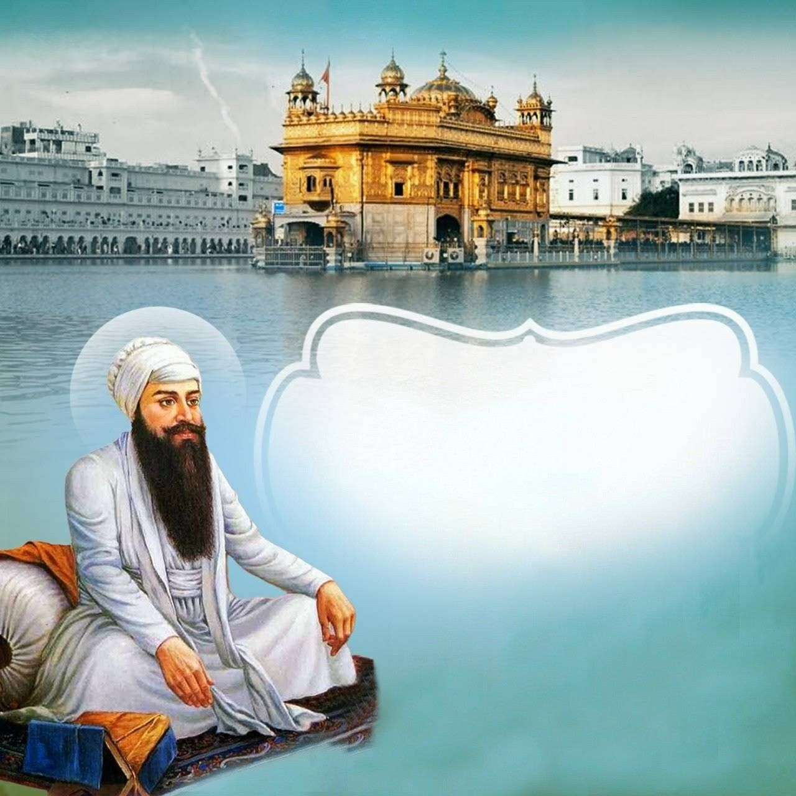

Sri Guru Ramdas Ji, also known as Jetha Ji, was born on September 24, 1534, in Chuna Mandi, Lahore (now in Pakistan). He was the son of Mata Daya Kaur Ji (also known as Anup Kaur Ji) and Baba Hari Das Ji Sodhi Khatri. Despite being a handsome and promising child, his family was very poor and he had to earn his living by selling boiled grams. Sadly, both his parents passed away when he was just seven years old, and his grandmother (his mother's mother) took him to her village, Basarke, where he spent five years continuing to sell boiled grams to make a living.
According to some records, Sri Guru Amardas Ji visited Basarke to offer his condolences to Sri Guru Ramdas Ji's grandmother after the death of her son-in-law, and developed a deep affection for Sri Guru Ramdas Ji. Along with his grandmother, Sri Guru Ramdas Ji moved to Goindwal Sahib where he continued to sell boiled grams and actively participated in religious congregations held by Sri Guru Amardas Ji, as well as in the development of the area.
Sri Guru Ramdas Ji was later married to Bibi Bhani Ji, the daughter of Guru Amardas Sahib Ji, and they had three sons: Prithi Chand Ji, Mahadev Ji, and Arjan Sahib Ji(who would later become the next Guru). After the wedding, Sri Guru Ramdas Ji stayed with his father-in-law and became deeply involved in the activities of the Guru Ghar (Sikhism). He gained the complete trust of Sri Guru Amardas Ji and often accompanied him on long missionary tours throughout India.
Sri Guru Ramdas Ji was a man of great merit, renowned for his piety, devotion, energy, and eloquence. Sri Guru Amardas Ji recognized his abilities and deemed him worthy of the position of Fourth Nanak, installing him as such on September 1, 1574. Sri Guru Ramdas Ji laid the foundation stone of Chak Ramdas or Ramdas Pur, which is now known as Amritsar. To achieve this, he purchased land from the zamindars of the villages Tung, Gilwali, and Gumtala and began the digging of Santokhsar Sarovar. Later, he suspended work on Santokhsar and focused his attention on digging the Amritsar Sarovar, assigning the supervising work to two devoted Sikhs, Bhai Sahlo Ji and Baba Budha Ji.
The new city, Chak Ramdas Pur, quickly flourished due to its location at the center of international trade routes. It soon became an important trade center in Punjab, surpassing even Lahore. Sri Guru Ramdas Ji himself invited many merchants and artisans from different trades and walks of life to settle there, a move that proved to be of great significance. Chak Ramdas Pur provided a common place of worship for Sikhs, paving the way for future guidelines for Sikhism as a distinct religion.
Sri Guru Ramdas Ji introduced the Masand system in place of the Manji system, which played a vital role in consolidating Sikhism. This system created a network of Sikh preachers and administrators who were responsible for collecting offerings from the Sikh community and managing the affairs of Sikh temples. The introduction of this system helped to strengthen and organize the Sikh community, making it a more cohesive and effective force.
Sri Guru Ramdas Ji further strengthened Sikhism by composing the Four Lawns and advising Sikhs to recite them during their children's marriages, introducing a new matrimonial system based on Sikhism instead of the traditional Hindu Vedi system. This distinctive marriage code for Sikhs separated them from orthodox and traditional Hindu practices. Additionally, he made efforts to reconcile with different sects of Udasis through Baba Shri Chand Ji. He continued the tradition of Guru ka Langar, while strongly condemning superstitions, the caste system, and pilgrimages.
He wrote 638 hymns in 30 ragas, including 246 Padei, 138 Saloks, 31 Ashtpadis, and 8 Vars, all of which are a part of Guru Granth Sahib. Sri Guru Ramdas Ji nominated his youngest son, Guru Arjan Sahib, as the Fifth Nanak. After this, he left Amritsar and retired to Goindwal Sahib, where he passed away for heaven a few days later, on Bhadon Sudi 3rd (2nd Assu) Samvat 1638 (September 1, 1581).
Guru Ram Das Ji's father was Hari Das, and his mother was Daya Kaur (previously known as Anup Kaur). His grandfather, Thakar Das, belonged to the Khatri Soghi Clan and was a shopkeeper at Chuna Mandi in Lahore. Both of Guru Ram Das Ji's parents were very religious, and despite their prayers, they were childless for twelve years. Finally, a son was born whom they named Ram Das Ji, but unfortunately, both his parents died when he was just seven years old.
After his parents' death, Jetha (as he was known at that time) and his siblings were taken care of by their maternal grandmother, who was too poor to support them. At the age of nine, Jetha began to sell boiled grams and boiled wheat to make a living. One day, he came across a group of holy men to whom he offered his boiled grams free of cost, which often led to scolding from his grandmother.
Later, Jetha heard about Guru Amardas Ji and decided to join a group of devotees to visit him at Goindwal. There, he was enchanted by the holy atmosphere and decided to settle there. Jetha resumed his profession of selling boiled grams and began participating in the religious congregations held by Guru Amardas Sahib Ji.
Sri Guru Ramdas Ji, a celebrated poet, composed about ten percent of the hymns found in the Guru Granth Sahib Ji, totaling 638 hymns, which he composed in 30 ancient ragas of Indian classical music.
According to Sri Guru Ramdas Ji, a disciple of the Guru should rise before dawn and meditate on the Lord's Name. During the early hours, they should rise and bathe, cleansing their soul in a tank of nectar, while repeating the Name the Guru has given them. By following this practice, one can truly wash away the sins of their soul.
For Sri Guru Ramdas Ji, the Name of God brings joy to the heart, and the greatest fortune is to meditate on God's name. The miracle of God's name is attained through the perfect Guru, but only a rare soul walks in the light of the Guru's wisdom.
Sri Guru Ramdas Ji warns against the poison of pride, which can blind one to God and scar the body with the discolorations of selfishness. Illusions of grandeur may turn black, but the ego-maniac remains attached to them.
Guru Ram das ji passed away on 1 September 1581, in the town of Goindval in Punjab. Among his three sons, he chose Arjan Dev Ji, the youngest, to be his successor as the fifth Sikh Guru. However, this choice of succession resulted in disputes and internal divisions among the Sikhs. Ram das ji's eldest son, Prithi Chand, is remembered in Sikh tradition as vehemently opposing Arjan Dev Ji and creating a faction within the Sikh community that Arjan's followers referred to as "Minas" (meaning "scoundrels"). Prithi Chand is alleged to have even attempted to assassinate young Hargobind. However, alternate competing texts written by the Prithi Chand-led Sikh faction present a different story and contradict the explanation regarding Hargobind's life, portraying the elder son of Ram das ji as devoted to his younger brother Arjan. The competing texts do acknowledge disagreements and describe Prithi Chand as having become the Sahib Guru after the martyrdom of Guru Arjan Dev Ji and disputing the succession of Guru Hargobind Singh Ji, Ram das ji's grandson.
Guru Ram Das Ji is widely recognized for being the founder of the sacred city of Amritsar in the Sikh tradition. There are two versions of stories regarding the land where Guru Ram Das Ji chose to settle. According to a record in the Gazetteer, it is believed that the land was acquired through the use of donations contributed by Sikhs. The village of Tung, where the land was purchased from its owners for a sum of 700 rupees, is said to have been involved in this transaction.
According to historical records of the Sikh community, Guru Amar Das selected a site and named it Guru Da Chakk. He tasked Ram Das Ji with finding land to establish a new town, with a man-made pool at its center. Following his coronation in 1574, Ram Das Ji faced opposition from Amar Das' sons. Nevertheless, he founded the town and named it after himself, "Ramdaspur". His first order of business was to complete the pool and build his official Guru center and residence next to it. He invited traders and artisans from other parts of India to settle in the new town with him. Over time, the town expanded under Arjan's leadership, financed by donations and constructed by volunteer labor. It eventually grew into the city of Amritsar, with the pool area evolving into a temple complex after Arjan's son constructed the gurdwara Harmandir Sahib and installed the Sikh scripture inside the temple in 1604.
The Mahima Prakash Vartak, a semi-historical Sikh hagiography text that was likely written in 1741, provides a description of the construction activities that took place between 1574 and 1604. This text is the earliest known document that deals with the lives of all ten Sikh Gurus.
Ram Das Ji, along with Amar Das, is credited with various parts of the Anand and Laavan composition in the Suhi mode. This composition is an integral part of the Sikh marriage ceremony where the bride and groom perform four clockwise circumambulations around the Sikh scripture to solemnize their marriage. However, the use of this composition was intermittent and eventually lapsed in the late 18th century.
In the 19th or 20th century, conflicting accounts suggest that the composition of Ram Das Ji came back into use along with the Anand Karaj ceremony, replacing the Hindu ritual of circumambulation around the fire. Ram Das Ji's composition became one of the basis of the British colonial era Anand Marriage Act of 1909. The wedding hymn was originally composed by Ram Das Ji for his own daughter's wedding.
The first stanza of the Laavan hymn by Ram Das Ji speaks of the duties of a householder's life, which involves accepting the Guru's word as a guide and remembering the Divine Name. The second verse and circle remind us that the singular Divine is present everywhere, including within oneself. The third stanza speaks of Divine Love, and the fourth reminds us that the union of the two individuals in marriage is the union of the individual with the Infinite.
Guru Amar Das Ji introduced the manji system of religious organization, which Ram Das Ji expanded upon by incorporating the masand institution. The masands were leaders of the Sikh community who resided far from the Guru, but played a critical role in leading remote congregations, promoting interactions between them, and collecting funds for Sikh activities and temple construction. This institutional organization proved to be instrumental in the growth of Sikhism in subsequent decades. However, during the era of later Gurus, the masand system became infamous due to its corruption and its misuse in financing rival Sikh movements during succession disputes.